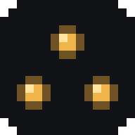

3 Good Things
Or answer Claude's evening check-in. Both land in the same log.
Each night
Three things that went well, and why each one happened. Small and specific counts.
To put this on your home screen: Chrome menu (⋮) > Add to Home screen, or Install app.
Pick one.
Ask how, not why.
What exactly happened? What's one next step?
Use your name.
“Matt, what's actually going on?”
Park it.
Jot one word. Save it for a set 30‑minute slot.
Walk somewhere green.
A park, not a busy street.